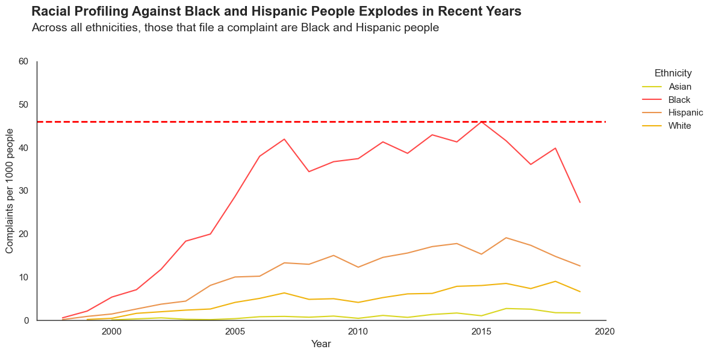
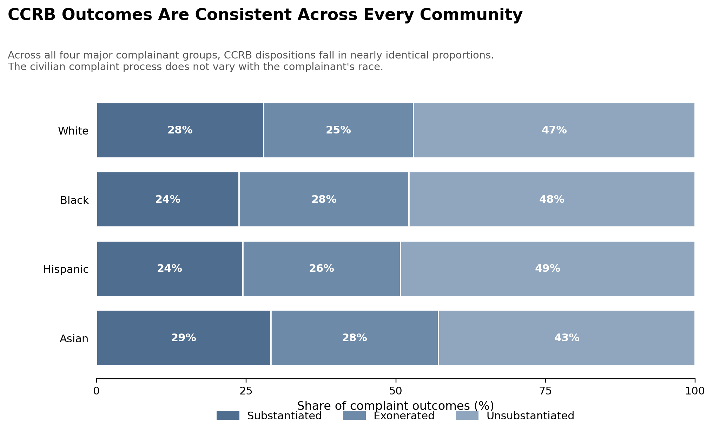

Proposition: Racial Discrimination is Rampant; Clearly underlined by NYPD complaints
FOR the Proposition

Design Decisions and Rationale:
- Transforming the data to show complaints per 1000 residents
- Opting for a Sequential Color Scheme
Score: 2
Rationale: Instead of showing raw numbers, this transformation allows for a more reliable comparison between ethnic groups. We normalize against each group's population size by accounting for the fact that each ethnic group differ in size. This makes the visualization more persuasive by plotting the data along the same scale, allowing people to observe the differences especially between Black/Hispanic people versus Asian/White people.
Score: 0
Rationale: Using a sequential color scheme helps to visually represent the data in a logical order, making it easier for viewers to distinguish which ethnic group is the most affected. This makes the visualization more persuasive because the bolder colors draw more attention toward Black and Hispanic groups. Additionally, the red colors are used to highlight and make the line seem more concerning to viewers. One possible limitation is those with colorblindness might be prone to misinterpreting the colors.
AGAINST the Proposition

Design Decisions and Rationale:
- Normalized each row to 100%.
Score: -2
Rationale: By normalizing each row to 100 That erases the fact that Black New Yorkers file roughly 54% of complaints in absolute terms. Four near-identical bars let the reader conclude that everyone gets treated the same. This is deceptive because it hides the fact that Black New Yorkers are disproportionately affected by police misconduct, and it is not persuasive because it fails to highlight the disparities in complaint outcomes.
- Three shades of the same blue.
Score: -1
Rationale: "Substantiated" and "Unsubstantiated" end up looking visually similar, which softens the contrast between them and makes it harder for viewers to quickly grasp the differences in complaint outcomes across racial groups. This is deceptive because it downplays the severity of the issue and is not persuasive because it fails to draw attention to the disparities in complaint outcomes across racial groups.
- Comparison with a 100% Stacked Bar Chart
Score: 1
Rationale: A 100% stacked bar chart is reasonable since the goal is to compare outcome composition across groups. This is not deceptive because it accurately represents the proportion of each outcome category within each racial group, and it is somewhat persuasive because it allows viewers to see the minimal differences in complaint outcomes across racial groups.
Final Reflection
[WRITE FINAL REFLECTION PARAGRAPHS HERE.]